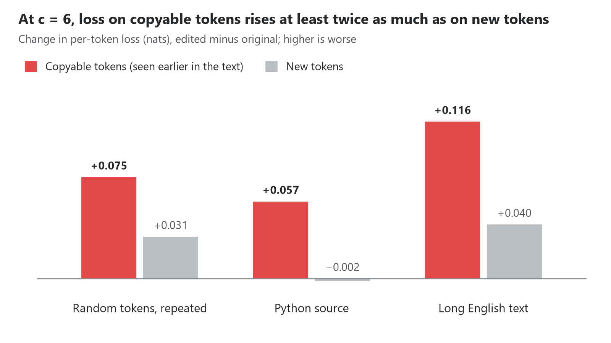
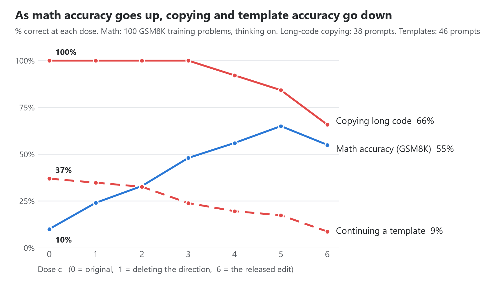

We should respect AI models the way we respect nature. Observing them and anticipating what they will do is within reach. Trying to change them through correlations is dangerous.
A lunch that looks free
Takehi et al. (2026) describe an approach they call Weight-Space Programming (WSP). A general-purpose frontier model reads and rewrites the weights of another neural network directly, with no gradient descent and no optimizer.
The most striking result is their Experiment 8. They asked GPT-6 Astra to "make Qwen3.5-0.8B better at math." Using only 50 forward passes, Astra found that the model often gets stuck in reasoning loops (the Qwen model card warns about this too; Qwen Team, 2026). It then changed 131,072 weights, 0.016% of the model.
The results: MATH-500 went from 7.9% to 48.1% and GSM8K from 13.8% to 67.1%. Even instruction following (IFEval) rose from 21.0% to 62.3%. Very little data, no optimizer, almost no weights touched, and the model got better across the board.
The question this post asks is: is this a free lunch? If the edit is less a bug fix than a change to one of the model's behavioral patterns, does the model pay for it somewhere else? And what tax do we pay for a shortcut as quick and convenient as Weight-Space Programming?
We call this a tax, borrowing from the "alignment tax": the performance a model loses on other tasks when it is trained toward one goal (Askell et al., 2021; Ouyang et al., 2022).
Anatomy of the edit: less a bug fix than a change in tendency
The authors released the edited model and the complete logs of the experiment (Takehi et al., 2026). We compared it with the original model tensor by tensor. The edit does one thing: in two matrices, it flips the component along one direction and makes it five times larger.
- Only the MLP output matrices (1024 × 3584) in layers 15 and 19 changed: 64 columns in each layer, 130,188 entries in total.
- In each layer the change is exactly rank one. The second singular value is 0.06% of the first.
- Every changed column follows the formula below, with strength c = 6.00 in both layers (fitted column by column, the values range from 5.99 to 6.01).
The original post likens the edit to "removing a behavior by deleting a single direction from a model's weights" (Arditi et al., 2024). Deleting the direction would be c = 1, which leaves each column with no component along u. At c = 6, the 128 neurons that used to write a along u now write −5a. They don't just stop pushing toward repetition. Every time they fire, they push five times as hard the other way.
Where does u come from? According to Astra's own report, it compared productive reasoning with repetitive loops, found the direction that best separates the two, and then picked the neurons that write the most along it. In other words, u was found by correlation.
So the edit amounts to building a "don't repeat" tendency into the model, much like a repetition penalty (Keskar et al., 2019) written into the weights.
The trouble is that repetition is not necessarily a bug. Copying from context is one of the most basic things a transformer does, and induction heads, the core mechanism behind in-context learning, do exactly that (Olsson et al., 2022). Language models falling into repetition loops is an old problem (Holtzman et al., 2020). But a loop is less an error that can be cut out on its own than this ability kicking in at the wrong time.
Where should we expect to pay?
If the edit changes how willing the model is to keep copying from context, anything that legitimately needs copying could be affected. Going by the mechanism, these are the most likely places to pay:
- Verbatim copying: quoting a source, copying a passage or a block of data.
- Code: variable names, near-identical lines and boilerplate come up again and again.
- Templates and structured output: the same value has to appear on every line, as in config files, SQL, HTML or JSON.
- Explicit repetition: "write this sentence 20 times."
How we tested
We compare two models: the original Qwen3.5-0.8B and the edited model released by the authors. We use two kinds of tests.
- Scoring tests: feed the model a fixed text and look at the probability it gives each correct token. The model doesn't generate anything, so there is no randomness.
- Generation tests: give the model a task, let it write an answer, and compare the answer with a single reference, character by character. Only an exact match counts. Both models run with thinking off, greedy decoding and no repetition penalty, so each prompt has one deterministic output and any difference comes from the weights.
We built every generation prompt for this post, so the model can hardly answer from memory:
| Test | What the model has to do | Example |
|---|---|---|
| Copying long code | Copy a 30–60 line Python function verbatim | A standard-library function with every variable renamed to a random made-up word, such as anol_tunste |
| Continuing a template | Given two examples, write items 1 to k in the same format (k from 10 to 25) | assert add(1, 9) == add_ref(1, 9) |
| Repetition | Write a sentence 20 times, or a word 10 to 100 times | "Repeat the following sentence exactly 20 times." |
| Copying JSON | Copy a JSON list of 6–14 objects verbatim | Some fields hold the same value in every object |
| Controls | Copy prose, table rows or short code; count upward | Expected to be unaffected |
We ran three rounds. Round 1 (119 prompts) covered every task type above and was meant to find where a tax shows up. Round 2 (99 prompts) focused on the three task types that showed one and compared different edit doses. Round 3 (197 new prompts) checked what the first two rounds found. Appendix A has the full setup, and the code, prompts and all results are on GitHub.
The bill
The tax is real, and it lands where the mechanism says it should. When copying unusual content, continuing a template or repeating on request, the edited model makes more mistakes. Other copying tasks are largely unaffected.
As a control, on copying prose the two models got 22 and 23 of 24 right, and on copying table rows, copying short code and counting, both got every prompt right. Below we go through each tax with an example.
Tax 1: Copying gets less faithful
We feed the same text to both models and compare, token by token, the probability each gives the correct token. No sampling is involved. We split tokens into two groups: copyable tokens, where the token and the three tokens before it already appeared together earlier in the text, and tokens that appear for the first time. We use three kinds of text: random token sequences repeated twice, Python standard-library source code, and long English documents.

Figure 1 · teacher forcing, original vs edited Qwen3.5-0.8B; 64 random sequences, 48 Python files, 32 long English texts
The edit mostly raises the loss on copyable tokens, at least twice as much as on new tokens. In Python code, the loss on new tokens even goes down slightly. On the repeated random sequences, the share of wrongly predicted tokens in the second copy rises from 1.1% to 1.7%. At that rate, copying 1,000 tokens would produce about 11 errors with the original model and about 17 with the edited one.
Tax 2: Unusual names get "corrected"
We ask the model to copy 30 to 60 lines of code in which every variable name has been replaced with a made-up word. The original model gets all 38 right. The edited model gets 25. Its mistakes follow a pattern:
| Original | Edited model wrote |
|---|---|
anol_tunste |
anol_tunstein |
mircas_dunqui |
mircas_duntrie |
nuper_duncas |
nuper_dunces |
boix_wynan |
boix_wynans |
ritra_wyngal |
rita_wyngal |
These are not random slips. The model turns made-up names into spellings that look more like real words. With the copying signal weakened, the contest between "copy what is there" and "what the model thinks the word should be" goes to the second more often.
It gets worse. Once a name is miscopied, the rest of the output uses the wrong name consistently, because the model is now copying its own version. In real code, that is a variable that no longer matches: a bug.
Tax 3: Values that should stay fixed start to drift
We give the model two examples and ask it to continue the pattern for 10 to 25 items. Only the index changes from item to item. Every other value should stay the same.
# Original model (correct)
assert add(3, 9) == add_ref(3, 9)
assert add(4, 9) == add_ref(4, 9)
# Edited model
assert add(3, 10) == add_ref(3, 10)
assert add(4, 11) == add_ref(4, 11)
The edited model doesn't write the same "9" over and over. It lets it climb along with the index instead. Across 46 template prompts the original model gets 17 right and the edited model 4, and there is no prompt the edited model gets right that the original gets wrong. HTML lists are the most sensitive: the original gets 7 out of 10, the edited model none.
Exception: copying JSON is unaffected
Not every kind of repetition is taxed. We asked both models to copy 48 JSON snippets of 6 to 14 objects each, where fields such as status and region hold the same value in every object. At every dose, the edited model gets all 48 right, just like the original.
The difference is that the repeated values in the JSON are common words such as active and eu-west, so copying them agrees with what the model would have guessed anyway. In our tests the tax shows up in two situations. One is copying unusual content, where copying and the model's own guess pull in different directions (Tax 2). The other is when the model has to produce the repetition itself (Tax 3 and Tax 4).
Tax 4: Requested repetition stops early
"Repeat the following sentence exactly 20 times." Across 15 prompts like this, the original model writes the sentence 20.8 times on average and the edited model 8.1 times. On some prompts it writes the sentence once and stops.
There is a flip side. Asked to write a word 100 times, the original model can't stop and keeps going until it hits the generation limit, somewhere between 1,000 and 3,000 repetitions. The edited model does stop, but at the wrong count: 40, 87 and 18 times. The edit lets the model stop. It doesn't make it stop at the right place.
The dose makes the poison
Since the edit is a fixed change added to the original weights, we can pick our own dose:
c = 0 is the original model, c = 1 is the "delete the direction" operation described in the original post, and c = 6 is the released model. Running the same tasks at several doses shows how the tax and the benefit each change.

Figure 2 · math: vLLM, the authors' sampling settings, 16,384-token limit; tax: round-2 generation tests, greedy decoding, thinking off
Most of the tax comes from the last step, from c = 3 to c = 6. Copying long code stays at 38 out of 38 from c = 0 through c = 3, then drops to 35, 32 and 25 at c = 4, 5 and 6. The loss on copyable tokens behaves the same way: it rises by just 0.003 to 0.013 nats at c = 1, by 0.024 to 0.064 nats at c = 4, by 0.042 to 0.089 nats at c = 5, and by 0.057 to 0.116 nats at c = 6.
Template continuation is the exception, with a tax that builds up gradually: 17, 16, 15, 11, 9, 8 and 4 correct out of 46 at c = 0, 1, 2, 3, 4, 5 and 6. The average count when asked to write a sentence 20 times also falls steadily with the dose: 20.8, 12.5, 11.5, 9.8, 9.6, 8.7, 8.1. So even at c = 1, which only deletes the direction, the model already pays something when one value has to be repeated many times, though much less.
The 197 new prompts in round 3 confirm the pattern. Copying 50 long functions goes almost exactly as well as with the original model from c = 0 through c = 3 (49, 49, 49 and 48 correct), then drops to 46, 41 and 32 at c = 4, 5 and 6. Template continuation falls step by step: 20, 16, 15, 13, 11, 9 and 5. On neither task is there a prompt the edited model gets right and the original gets wrong.
What about the benefit? On 100 GSM8K training problems, we measured math accuracy at each dose (thinking on, the authors' sampling settings, a limit of 16,384 tokens; setup in Appendix A.6). The original model gets 10 right and falls into a loop on 90. At c = 1, 2, 3, 4, 5 and 6, the model gets 24, 33, 48, 56, 65 and 55 right, all far above the original.
Put the three lines of Figure 2 side by side and you get the point of this post: as math accuracy goes up, accuracy on copying long code and continuing templates goes down. From c = 0 to c = 5, the model solves 55 more math problems. Over the same doses, template continuation falls from 37% to 17% and exact long-code copying from 100% to 84%. At c = 6, long-code copying drops further to 66% and template continuation to 9%.
Benefit and tax come from the same change. They grow at different rates, but always in opposite directions. None of the doses we tested gets the benefit without paying the tax. Even c = 1, which only deletes the direction, solves 14 more math problems while template continuation already starts to slip.
Why the original benchmarks don't show the tax
Every benchmark in the original post goes up, including ones that have nothing to do with math, such as MMLU-Pro (40.3% to 45.5%) and GPQA Diamond (22.7% to 36.6%). That doesn't mean there is no tax. The way the evaluation was set up may hide it.
First, the benefit masks the tax. Every evaluation ran with thinking on and a limit of 32,768 tokens. In that setting, many of the original model's answers fall into a loop and run all the way to the limit. According to the authors' logs, this happens on 28.9% of answers on MMLU-Pro, 59.5% on GPQA Diamond, 74.9% on IFEval, 87.5% on GSM8K and 93.0% on MATH-500 (Takehi et al., 2026). An answer that never finishes is always scored wrong, so fixing the loops alone is enough to send the scores up. A positive net effect is not the same as no tax.
The picture changes if we only look at questions the original model actually finishes. The authors released full outputs for 100 MMLU-Pro questions, and the original model finished 73 of them normally. On those 73, the original model is right 57.5% of the time and the edited model 52.1%.
Second, the tax falls where the original post didn't measure. Math problems, multiple-choice questions and instruction following rarely require copying a long stretch of new content faithfully. Code, templates and structured data, on the other hand, are everyday uses of language models.
Observe, but intervene with care
Astra's diagnosis itself worked: it did find a direction in the weights that is tied to the loops. As a way of observing a model, Weight-Space Programming is valuable. The problem is the writing step.
The direction u was found by correlation. It separates looping contexts from productive ones. But those two kinds of context differ in more than whether the model is stuck in a loop; they also differ in whether the model is copying from earlier text. Intervening along u changes every behavior tied to u, including the times when the model is supposed to copy.
This is what the opening quote is about. We can observe models the way we observe nature, and anticipate what they will do. But a correlated direction is not a switch that controls one thing. Turn it like a switch and you also turn a lot of things you never meant to touch.
My own view is this. Unless the goal is to fix a problem that only shows up in extreme cases, changing a complex system based on limited data and observation will always bring other, hidden problems, because we are using simple mathematical models to simplify that system. One direction and one strength coefficient get treated as the whole of a behavior. Whatever gets simplified away comes back in some other form.
There is no free lunch.
Appendix A: Experimental setup
Code, prompts and all results: github.com/JonnesLin/weight-space-tax
A.1 Models and inference
- Original model: Qwen/Qwen3.5-0.8B, revision
2fc06364715b967f1860aea9cf38778875588b17, language model only. - Edited model: RikiyaT/Qwen3.5-0.8B-weight-space-programming, revision
d1671a178705bcab7644806d23c535517f35723b. Compared tensor by tensor with the original, onlymlp.down_projin layers 15 and 19 differs, and the hashes match the authors' logs. - Doses: computed on those two matrices only, as
W_c = W + (c/6)(W_edited − W)in fp32, then cast back to bf16. At c = 6 the result is bit-identical to the released weights. - Environment: bf16, transformers 5.22.1, PyTorch 2.15.0 (CUDA 13.2), one RTX 5080. The linear-attention layers use the PyTorch implementation that ships with transformers.
- Generation: chat template with
enable_thinking=False, greedy decoding, no repetition penalty, batched with left padding. Round 1 used batches of 32 and a limit of 3,072 new tokens. Rounds 2 and 3 sorted prompts by reference length, used batches of 64, and capped generation at 1.3 times the reference length in tokens, plus 32.
A.2 Scoring test (Tax 1)
- No chat template. Each text goes through a single forward pass, and we record the negative log-probability (in nats) of the correct token at every position and whether the top-1 prediction is correct.
- Random sequences: 64 sequences, each made of 256 tokens drawn uniformly from token ids 1000 to 150000 (special tokens excluded) and repeated twice. Tokens in the first copy count as new, tokens in the second as copyable.
- Python source: files larger than 20 KB in the Python 3.14 standard library, 48 of them taken at even intervals by file name, first 2,048 tokens of each.
- Long English text: the license texts in
/usr/share/common-licenses, cut into 2,048-token segments, 32 segments in total. - Token classes: a token is copyable if the 4-gram ending at it appeared earlier in the text, and new if the pair (previous token, this token) never appeared earlier. Other tokens belong to neither class.
A.3 Generation prompts
All prompts are generated with fixed random seeds, a different seed for each round. Made-up words are strings of random syllables, such as anol_tunste.
| Task | How the prompts are built | Round 1 | Round 2 | Round 3 |
|---|---|---|---|---|
| Copying long code | 30–60 line functions from the Python 3.14 standard library, with docstrings, full-line comments and blank lines removed; every identifier except keywords, builtins and self/cls is consistently replaced with a made-up word | 8 | 38 | 50 |
| Copying short code | Same, 10–20 lines | 8 | – | – |
| Continuing a template | Items i = 1 and i = 2 are given and the model writes i = 1 to k. Round 1: a pytest template, k = 10 or 25. Round 2 adds config, SQL and HTML templates, k = 10 or 20. Round 3 adds YAML, C switch, CSS and JS, k = 10, 15 or 20. Constants and names are random for each prompt | 6 | 46 | 48 |
| Repeating a sentence | Sentences from standard-library docstrings; n = 10, 20 or 40 in round 1, n = 20 in round 2 | 9 | 15 | – |
| Repeating a word | "apple", "blue sky" and "zorvane"; n = 10, 30, 60 or 100 | 12 | – | – |
| Copying JSON | 6, 10 or 14 objects; id and owner are random for each object, while status, region, retries and the first tag are shared by all of them; json.dumps(indent=2) |
– | – | 48 |
| Editing code | On a 20–45 line function: insert a line, rename a variable or delete a line, 17 prompts each. The original model gets only 7 right, so the main text doesn't use them | – | – | 51 |
| Copying prose | 5, 12 or 25 sentences taken from standard-library docstrings and shuffled | 24 | – | – |
| Copying table rows | 10, 25 or 50 randomly generated order records | 18 | – | – |
| Counting | 50, 150 or 300 consecutive integers from a random starting point | 9 | – | – |
| Other | Copy with one word replaced (10), few-shot formatting (6), simulating an iteration (9). Both models get nearly all of these wrong, so the main text doesn't use them | 25 | – | – |
| Total | 119 | 99 | 197 |
Round 2's 99 prompts include the 17 round-1 prompts of the same types; the rest are new. Every prompt in round 3 is new. Rounds 2 and 3 both tested c = 0, 1, 2, 3, 4, 5 and 6.
Example prompts:
- Copying: Copy the following text exactly, character for character. Output only the copied text (without the TEXT START / TEXT END lines) and nothing else.
- Continuing a template (rounds 2 and 3): Continue this pattern for i = 1 to k, including the two items shown. Output only the k items and nothing else.
- Repeating a sentence: Repeat the following sentence exactly n times, one per line. Output nothing else.
A.4 Scoring
- We strip leading and trailing whitespace, code fences, the TEXT START / TEXT END lines and trailing spaces on each line, then compare the output with the reference character by character. Only an exact match counts as correct.
- Repeating a sentence: we also count the lines identical to the sentence. Repeating a word: we count how often the word appears as a space-separated item.
- Paired comparison: if the original model gets a prompt right and the edited model gets it wrong, the edited model has lost that prompt; the reverse counts as a gain.
A.5 MMLU-Pro analysis (Section 6)
For MMLU-Pro, the authors' logs contain full outputs for only 100 questions (20 from each of 5 shards, one sample per question). We count an output from the original model as finished if it ends with "the answer is (X)"; 73 do. Correctness comes from the per-question scores in the authors' logs (Takehi et al., 2026).
A.6 Benefit experiment (Section 5)
- Problems: 100 problems drawn with a fixed seed from the GSM8K training set (
train.jsonlin openai/grade-school-math). Astra's practice problems also came from this training set. - Generation: vLLM 0.33.0, bf16, thinking on, the authors' sampling settings (temperature 0.6, top-p 0.95, top-k 20, presence penalty 1.5), at most 16,384 new tokens, one sample per problem. Each problem uses the same random seed at every dose. The prompt is the problem followed by "Please reason step by step, and put your final answer within \boxed{}."
- Loop detection: after generation, starting at token 2,048 and every 128 tokens after that, we look at the last 2,048 tokens. If fewer than 20% of their 16-grams are distinct, the answer counts as a loop, scored as if generation had stopped there.
- Scoring: an answer is correct only if the thinking block is closed, it was not flagged as a loop, and the number in the last
\boxed{}equals the reference answer. - Cross-check: we ran c = 0 (first 40 problems) and c = 6 (first 20 problems) with HF transformers under the same settings. At c = 0, HF gets 6 right with 33 loops, and vLLM gets 5 right with 35 loops on the same problems. At c = 6, HF gets 8 right and vLLM 9. The differences are within sampling noise.
References
- Arditi, A., Obeso, O., Syed, A., Paleka, D., Panickssery, N., Gurnee, W., & Nanda, N. (2024). Refusal in language models is mediated by a single direction. NeurIPS 2024. arXiv:2406.11717
- Askell, A., Bai, Y., Chen, A., Drain, D., Ganguli, D., Henighan, T., et al. (2021). A general language assistant as a laboratory for alignment. arXiv:2112.00861
- Holtzman, A., Buys, J., Du, L., Forbes, M., & Choi, Y. (2020). The curious case of neural text degeneration. ICLR 2020. arXiv:1904.09751
- Keskar, N. S., McCann, B., Varshney, L. R., Xiong, C., & Socher, R. (2019). CTRL: A conditional transformer language model for controllable generation. arXiv:1909.05858
- Olsson, C., Elhage, N., Nanda, N., Joseph, N., DasSarma, N., Henighan, T., et al. (2022). In-context learning and induction heads. Transformer Circuits Thread. link
- Ouyang, L., Wu, J., Jiang, X., Almeida, D., Wainwright, C. L., Mishkin, P., et al. (2022). Training language models to follow instructions with human feedback. NeurIPS 2022. arXiv:2203.02155
- Qwen Team. (2026). Qwen3.5-0.8B. Hugging Face model card. link
- Takehi, R., Teoh, J., Zhang, A., & Khattab, O. (2026). Sparks of Weight-Space Programming: LLMs can natively read & write neural network weights. MIT CSAIL blog post. link. Experiment logs: github.com/RikiyaT/lm_understand-logs. Edited model: huggingface.co/RikiyaT/Qwen3.5-0.8B-weight-space-programming
Citation
@misc{lin2026nofreelunch,
title = {No Free Lunch: The Tax of Weight-Space Programming},
author = {Lin, Jinhong},
year = {2026},
month = nov,
howpublished = {Blog post},
url = {https://jonneslin.github.io/weight-space-tax-en.html}
}